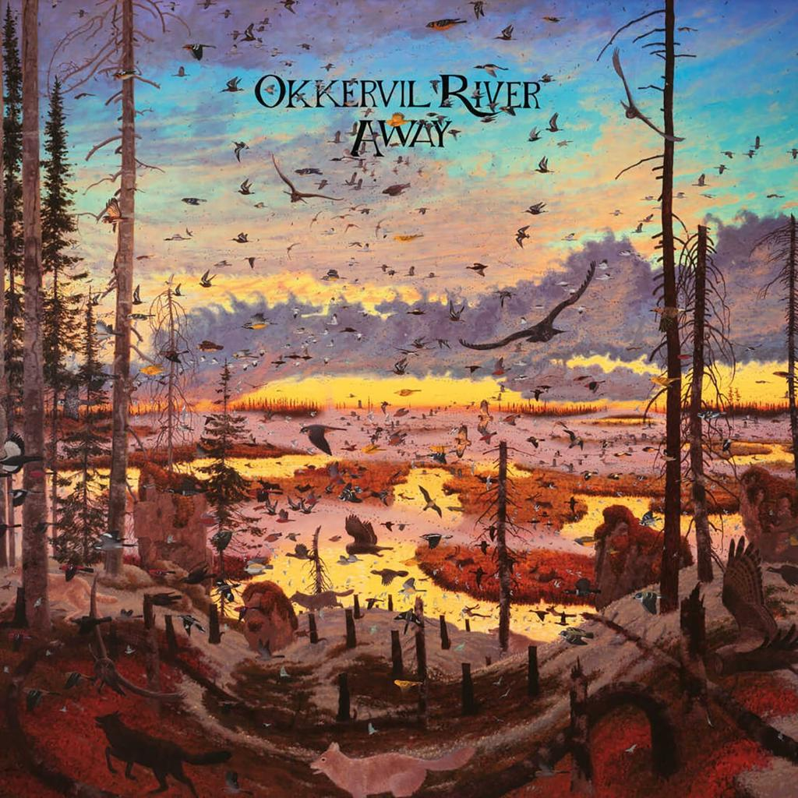

15 May 2026
Music Release
Perunggu Releases New Single
Perunggu officially releases their newest single titled "Dalam Bayang" and receives overwhelmingly positive responses from listeners across all platforms. The single showcases a new musical direction while maintaining their signature sound.
Read More